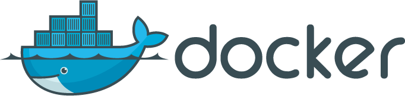

About Me
- 15+ years in IT ops and systems programming
- Worked at Intuit, Temboo and as a freelance consultant
- Early and frequent Docker contributor
- Creator of the Deis project
About Deis
- First Multi-Host Docker PAAS
- Heroku-inspired workflow
- 100% open source
- Python & Go
Why Docker?
- Speed
- Portability
- Density
Why Deis?
Docker is not enough!
Developer Workflow
- Create applications
- Push code or Docker images
- Set environment variables
- Manage releases and rollbacks
- Run ephemeral containers
- View aggregated logs
- Scale containers
- Collaborate with a team
Division of Responsibility
- Developers own the containers
- Operations own the platform
Philosophy
- Keep a stable developer workflow
- Rapidly improve the underlying implementation
- Evolve with the Docker ecosystem
Important
- Documentation
- Test Coverage
- Developer Experience
Less Important
- Comprehensive Specification
- Not-Invented-Here Syndrome
- Specific Languages
Deis Today
- ~2k stars, 100 watchers, 176 forks
- 4 full-time devs, ~40 contributors
- > 100 Deis deployments*
* that we know of
How did we get here?
(Chasing Docker)
Rush to prototype
Minimum Viable Workflow
$ deis register http://deis.local
$ deis keys:add ~/.ssh/id_rsa.pub
$ deis create myapp
$ git push deis master
$ deis config:set DATABASE_URL=postgres://
$ deis scale web=8
What do we need?
- Command-line Client
- API Server
- Git Server
- Chef Cookbooks
Workarounds
- Bind mounts
- Signals
- Service per container
- Databag scheduler
(Prototype Graphic)
(Docker Stability Drive)
More Features!
Add to Developer Workflow
- deis logs
- deis run
- deis releases
- deis sharing
(Docker Gets Popular)
Learn from the Community
(Docker Gets Stable)
Dockerize All The Things
Deis Components
- deis/controller
- deis/database
- deis/cache
- deis/logger
- deis/builder
- deis/registry
- deis/router
Deis Artifacts
- Switch from bind mounts to pure Docker Images
- Dockerfile shim for injecting Heroku Buildpack output
- Add last-mile layer for configuration data
- Distribute containers from private registry
Surprise!
- Components aren't actually decoupled
- Docker volumes are hard to work with
- Docker index errors are non-deterministic
- Difficult to debug live containers
(Container Architecture Diagram)
(Deis Gets Popular)

Scalability Issues
Deis Scalability Issues
- Max of 20 servers or 5 deploys/minute
- Node convergence is slow
- Pushing the limits of CM
Real Scheduler
Scheduler Prototyping
- Mesos/Marathon
- Flynn Layer 0
- CoreOS/Fleet


(Docker 1.0)
Deploy Docker Images
(Demo: Promoting Docker Images through Deis)
Future: Libswarm
Why Libswarm?
- Docker API
- Support multiple schedulers
- Benefit from Docker ecosystem